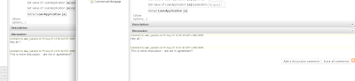

Real time chat…
And now for something completely different…
A recent feature request was for a discussion/comment feature for files in Guvnor:

The comments are below the “documentation” section (and of course optional) (and there is an Atom feed to them).
An interesting addition was using a “backchannel” type connection that is kept open from the browser to allow messages to push back – this means (when enabled) that messages show up in real time (and other handy things like if something is added to a list – the list is updated).
There are a few ways of doing this in a browser – but it all boils down to the same idea: opening a connection which “waits” on the server – the server can then “push” response messages back down this pipe (whence the client reconnects, waiting more). This type of thing is becoming more and more popular in “real time” features of websites, interestingly (but it is quite an old idea).
Here is a video which shows at the end 2 browsers, and the second one being updated in “real time” ** by the first one.
Enjoy !
** Yes this is not really “real time” but the term seems to have caught on due to things like Facebook, Google Wave etc…

{kind=link}